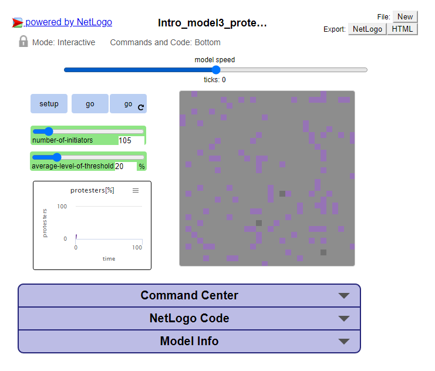
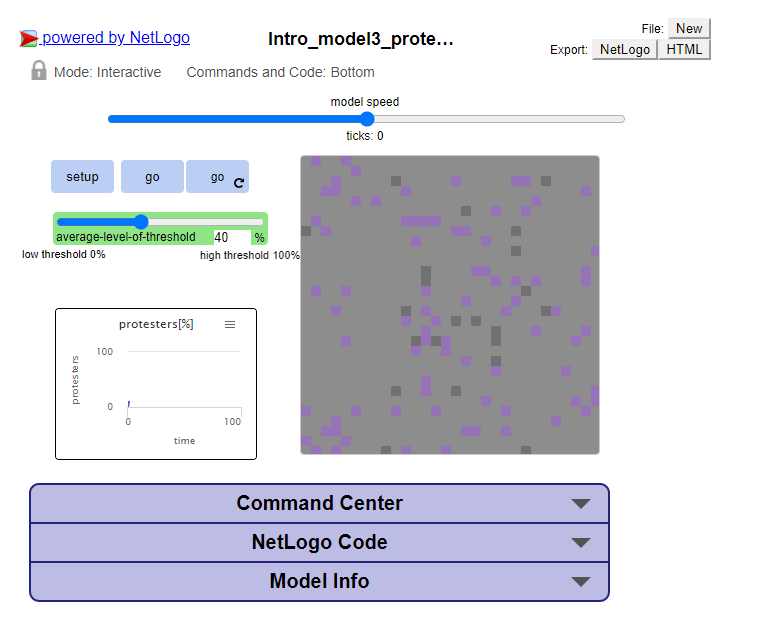
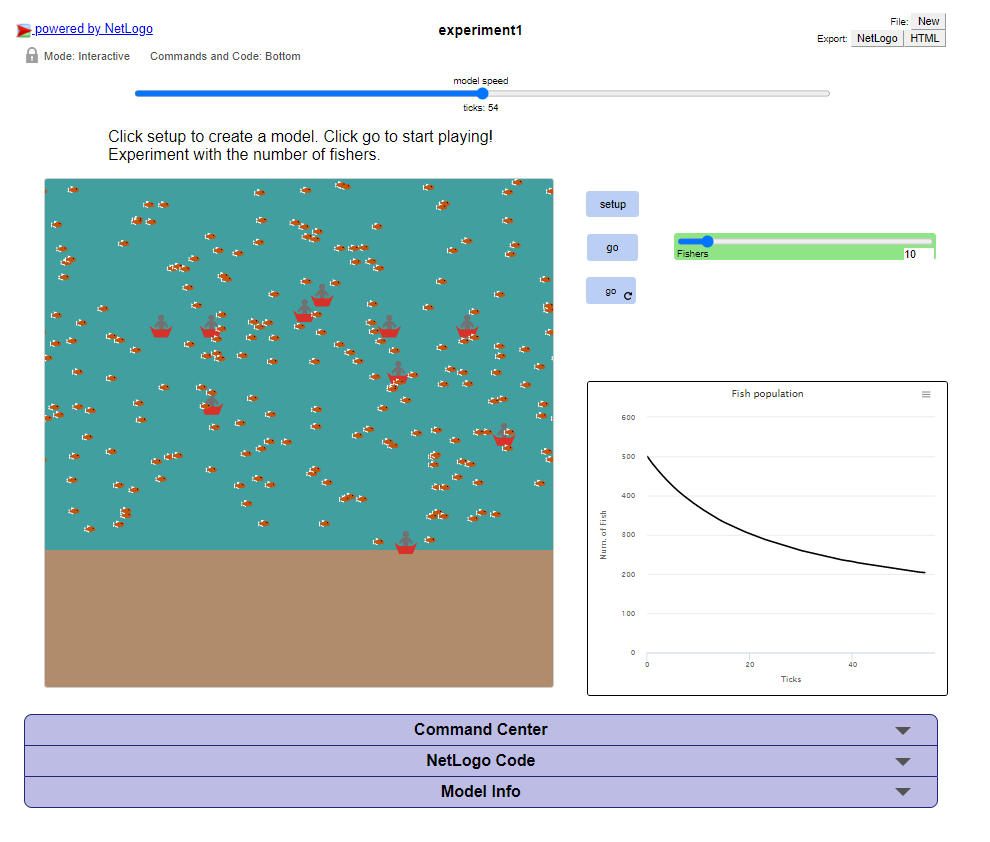
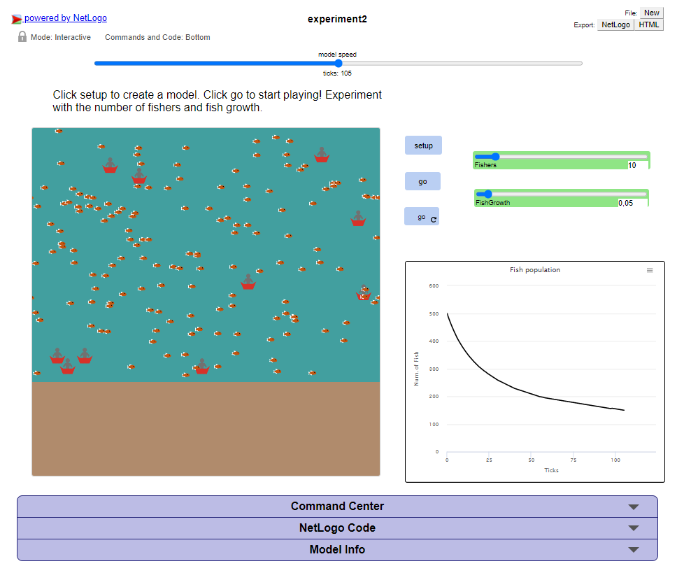
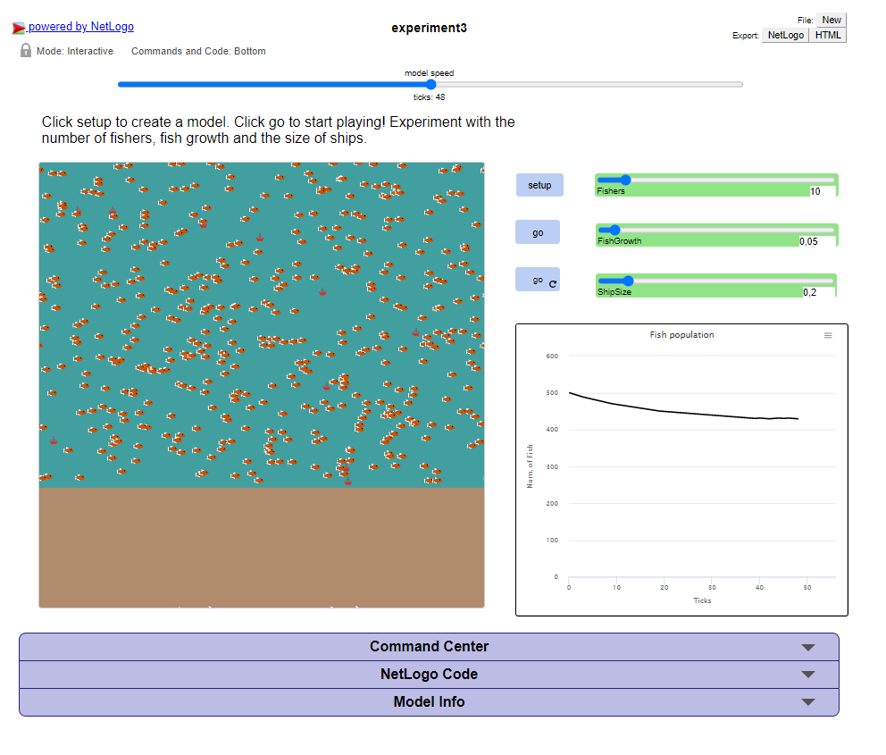
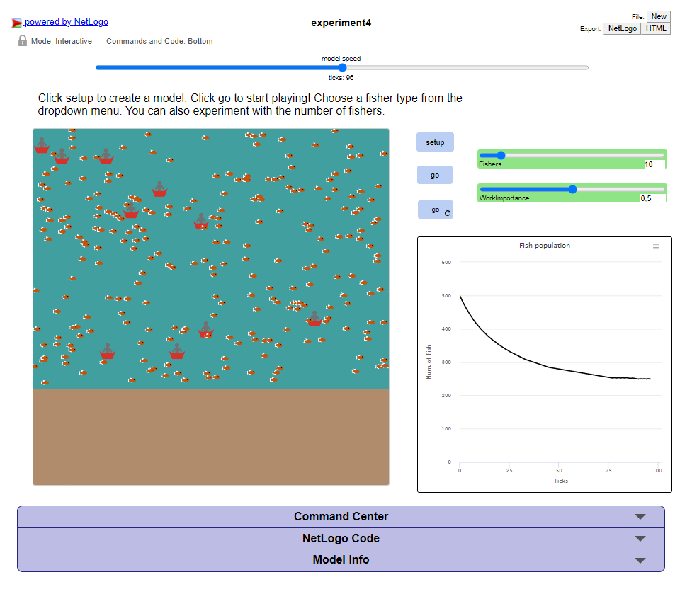
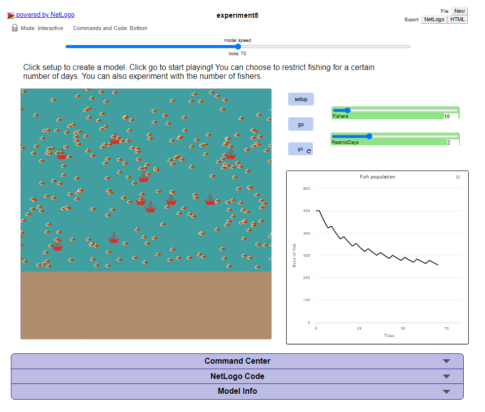
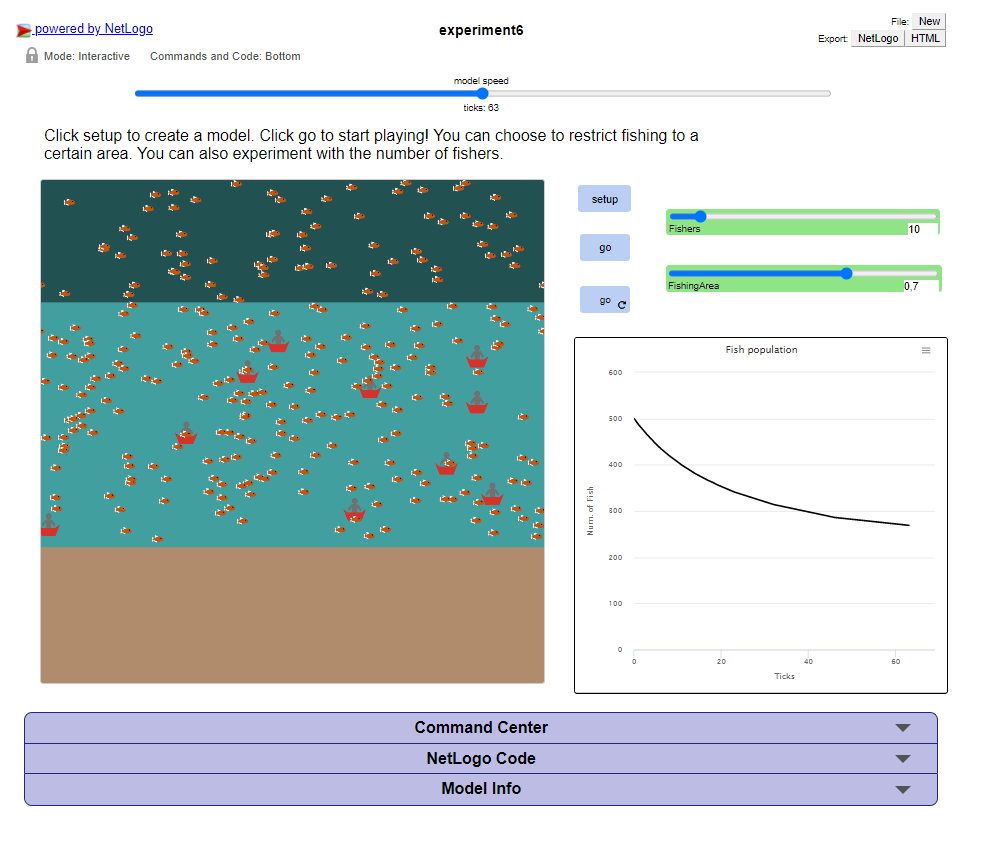
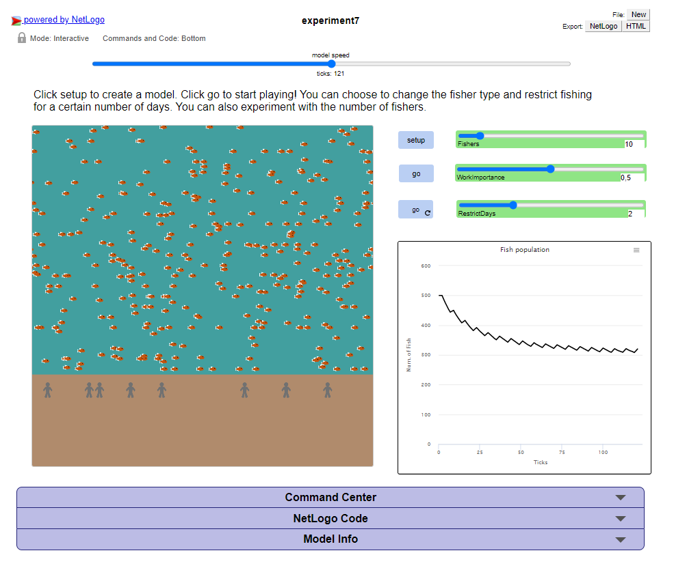
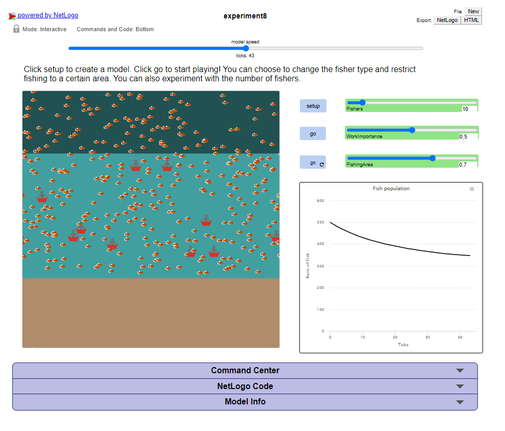

Netlogo models (best viewed on desktop)
Introductory module
Experiment 1
: Protest initiators
Experiment 2
: Protest initiators threshold
Experiment 3
: Protest threshold
Social network analysis: The networks connecting people
Experiment 1
: Number of fishers
Experiment 2
: Fish growth
Experiment 3
: Size of ships
Experiment 4
: Satisficing versus maximizing fishers
Experiment 5
: Limitation on number of sea days (Policy 1)
Experiment 6
: Closing areas (Policy 2)
Experiment 7
: Policy impact of limited days at sea for satificing versus maximizing fishers
Experiment 8
: Policy impact of closing areas for satificing versus maximizing fishers
: Number of fishers
: Fish growth
: Size of ships
: Satisficing versus maximizing fishers
: Limitation on number of sea days (Policy 1)
: Closing areas (Policy 2)
: Policy impact of limited days at sea for satificing versus maximizing fishers
: Policy impact of closing areas for satificing versus maximizing fishers